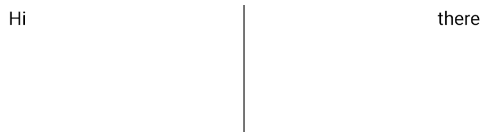

概述
Layouts in Compose
本章节中的 1-6.1 章节翻译自 官方文档 并加了一些注释，其余部分复制于官方文档的中文翻译
如有翻译不准确欢迎提交 issue / pr
Jetpack Compose 让设计和构建你的 app UI 变得更加容易。
这篇文档解释了 Compose 提供的一些构建模块，以帮助你布置你的 UI 元素，并告诉你如何在你需要的时候建立更专业的布局。
Composable 函数是 Compose 的基本构建模块，一个 Composable 的函数是一个 emitting Unit (通过声明式的语法去显示出一个界面元素？) 的函数，描述你的用户界面的某些部分。该函数接受一些输入并生成屏幕上显示的内容。
一个 Composable 函数可能会包含多个 UI 元素。但是，如果你不告诉它们应该如何被排列，Compose 可能不会按照你所想的方式来排列它们。
例如，这段代码生成了两个 Text 元素
@Composable
fun ArtistCard() {
Text("Alfred Sisley")
Text("3 minutes ago")
}
在你没有排列它们的情况下， Compose 会将 Text 元素堆叠在一起，变得无法阅读。

Compose 提供了一个现成的布局集合，以帮助你安排你的 UI 元素，并使你更容易定义你自己的、更专业的布局。
1. 标准布局组件
使用 Column 它会将里面的组件以行的形式呈现。
@Composable
fun ArtistCard() {
Column {
Text("Alfred Sisley")
Text("3 minutes ago")
}
}

同样地，你也可以使用 Row, 它会将里面的组件以列的形式呈现。
Column 和 Row 都支持配置它们所包含的元素的对齐方式。
@Composable
fun ArtistCard(artist: Artist) {
Row(verticalAlignment = Alignment.CenterVertically) {
Image( /*...*/ )
Column {
Text(artist.name)
Text(artist.lastSeenOnline)
}
}
}

注意
图中的圆形图像的效果可以在 基本组件/Image 中实现。 图中的文字效果可以在 基本组件/Text 中实现。
关于 Row 的详情可以参考 这里。
Tips
注意：Compose 有效地处理嵌套布局，使其成为设计复杂UI的好方法。这是对 Android Views 的改进，在 Android Views 中，出于性能原因，您需要避免嵌套布局。
如果想要在 Row 中设置子项的位置，可以设置 horizontalArrangement 和 verticalAlignment 参数，
对于 Column 来说，设置 verticalArrangement 和 horizontalAlignment。
@Composable
fun AlignInRow() {
Row(
modifier = Modifier
.size(150.dp)
.background(Color.Yellow),
horizontalArrangement = Arrangement.End, // 设置 Row 中的子项水平布局为最右边
verticalAlignment = Alignment.CenterVertically // 设置 Row 中的子项竖直布局为中心
// start 左边
// end 右边
// top 上边
// bottom 下边
) {
Box(Modifier.size(50.dp).background(Color.Red))
Box(Modifier.size(50.dp).background(Color.Blue))
}
}

2. Modifier
Modifier 允许你装饰或增强一个 Composable， Modifier 允许你做以下的事情。
- 改变 Composable 的大小、布局、行为和外观。
- 添加信息，如无障碍标签。
- 处理用户的输入。
- 添加高层次的交互，比如让一个元素可点击、可滚动、可拖动或可缩放。
- 修改器是标准的 Kotlin 对象。通过调用
Modifier类的一个函数来创建一个modifier。你可以把这些函数串联起来，组成它们：
@Composable
fun ArtistCard(
artist: Artist,
onClick: () -> Unit
) {
val padding = 16.dp
Column(
Modifier
.clickable(onClick = onClick)
.padding(padding)
.fillMaxWidth()
) {
Row(verticalAlignment = Alignment.CenterVertically) { /*...*/ }
Spacer(Modifier.size(padding))
Card(elevation = 4.dp) { /*...*/ }
}
}

在上面的代码中，你会注意到不同的 modifier 函数一起使用。
clickable使一个 Composable 元素对用户的点击作出反应，并显示一个波纹。padding在一个元素的周围填充了空间。fillMaxWidth让 Composable 元素填满其父元素的最大宽度。size()来指定一个元素的宽度和高度。
注意
在其他方面，Modifier 的作用类似于基于 view 布局中的布局参数。然而，由于 Modifier 有时是特定范围的，它们提供了类型安全，也帮助你发现和理解什么是可用的，适用于某个布局。对于 XML 布局，有时很难发现某个特定的布局属性是否适用于某个视图。
Modifier 函数的顺序是很重要的。因为每个函数都会对前一个函数返回的修改器进行修改，所以顺序会影响最终的结果。让我们来看看这个例子：
@Composable
fun ArtistCard(/*...*/) {
val padding = 16.dp
Column(
Modifier
.clickable(onClick = onClick)
.padding(padding)
.fillMaxWidth()
) {
// rest of the implementation
}
}

在上面的代码中，整个区域都是可点击的，包括周围的填充物，因为 padding modifier 被应用在 clickable 之后。如果 modifier 的顺序颠倒了，那么由 padding 增加的空间就不会对用户的输入做出反应。
@Composable
fun ArtistCard(/*...*/) {
val padding = 16.dp
Column(
Modifier
.padding(padding)
.clickable(onClick = onClick)
.fillMaxWidth()
) {
// rest of the implementation
}
}

注意
明确顺序有助于你推理不同的 Modifier 将如何相互作用。与基于 view 的系统相比，你必须学习盒子模型，即在元素的 "外面" 应用 margin，而在 "里面 "应用 pading，背景元素会有相应的大小
Modifier 的设计使这种行为变得明确和可预测，并给你更多的控制来实现你想要的确切行为。这也解释了为什么没有 margin 修改器而只有 padding 修改器
内置 modifiers
Jetpack Compose 提供了一个内置 modifiers 的列表，以帮助你装饰或增强一个 Composable。下面是一个涵盖最常见的使用情况的列表：
1. Padding 和 size
要在一个 Composable 的周围进行填充，请添加 padding
@Composable
fun PaddedComposable() {
Text(
text = "Hello World",
modifier = Modifier
.background(Color.Green)
.padding(20.dp)
)
}

默认情况下，Compose 中提供的布局是包裹其子项的。
然鹅，你可以通过使用 size 来设置一个尺寸
@Composable
fun SizedComposable() {
Box(Modifier.size(100.dp, 100.dp).background(Color.Red))
}
注意
如果您指定的尺寸不满足来自布局父级的约束，则可能无法使用该尺寸。如果你要求的 Composable 的尺寸是固定的，不管传入的约束条件如何，请使用 requiredSize
@Composable
fun FixedSizeComposable() {
Box(
Modifier
.size(90.dp, 150.dp)
.background(Color.Green)
) {
Box(
Modifier
.requiredSize(100.dp, 100.dp)
.background(Color.Red)
)
}
}

在这个例子中，即使父本的宽度被设置为 90.dp，内盒的宽度也将是 100.dp
因为内盒的 requiredSize 优先
@Composable
fun FillSizeComposable() {
Box(
Modifier
.background(Color.Green)
.size(50.dp)
.padding(10.dp)
) {
Box(
Modifier
.background(Color.Blue)
.fillMaxSize()
)
}
}

如果你想让一个子布局的尺寸与父 Box 的尺寸相同而不影响 Box 的尺寸，请使用 matchParentSize
请注意，matchParentSize 只在 Box 范围内可用，也就是说，它只适用于 Box composables 的直接子代
在下面的例子中，内部的 Spacer 从它的父 Box 中获取其大小，而父 Box 又从它包含的 Text 中获取其大小
@Composable
fun MatchParentSizeComposable() {
Box {
Spacer(Modifier.matchParentSize().background(Color.Green))
Text("Hello World")
}
}

如果使用 fillMaxSize 而不是matchParentSize，那么 Spacer 将占用允许给父代的所有可用空间，反过来导致父代扩展并填充所有可用空间

如果你想在文本基线上方添加 padding 使你达到从布局顶部到基线的特定距离
那么请使用 paddingFromBaseline
@Composable
fun TextWithPaddingFromBaseline() {
Box(Modifier.background(Color.Yellow)) {
Text("Hi there!", Modifier.paddingFromBaseline(top = 32.dp))
}
}

2. offset
要将一个布局相对于它的原始位置进行定位，可以添加 offet，并在 x 和 y 轴上设置偏移量
偏移量可以是正的，也可以是负的。padding 和 offset 的区别在于，给一个 Composable 添加 offset 并不会改变它的测量
@Composable
fun OffsetComposable() {
Box(Modifier.background(Color.Yellow).size(width = 150.dp, height = 70.dp)) {
Text(
"Layout offset modifier sample",
Modifier.offset(x = 15.dp, y = 20.dp)
)
}
}

padding modifier 根据布局方向在水平方向上应用。在从左到右的情况下，正的偏移值会将元素向右移动，而在从右到左的情况下，它会将元素向左移动。如果你需要在不考虑布局方向的情况下设置一个偏移量，请参见absoluteOffset 修改器，其中一个正的偏移值总是将元素向右移动
3. 响应性布局
设计布局时应考虑到不同的屏幕方向和外形尺寸。Compose 提供了一些机制来促进你的 Composable 布局适应各种屏幕配置
Row 和 Column 中的 weight modifier
正如你在前面关于填充和尺寸的章节中所看到的，一个 Composable 尺寸默认是由它所包裹的内容来定义的。你可以将一个 Composable 尺寸设置为在其父级内容中具有灵活性。让我们来看看一个包含两个盒子的行的可组合尺寸。
第一个盒子的权重是第二个盒子的两倍，所以它的宽度也是两倍。因为行的宽度是 210.dp，所以第一个盒子的宽度是 140.dp，而第二个是 70.dp
@Composable
fun FlexibleComposable() {
Row(Modifier.width(210.dp)) {
Box(Modifier.weight(2f).height(50.dp).background(Color.Blue))
Box(Modifier.weight(1f).height(50.dp).background(Color.Red))
}
}

4. 约束条件
为了知道来自父体的约束并相应地设计布局，你可以使用 BoxWithConstraints。测量约束可以在 content lambda 的范围内找到。你可以使用这些测量约束来为不同的屏幕配置组成不同的布局
@Composable
fun WithConstraintsComposable() {
BoxWithConstraints {
Text("My minHeight is $minHeight while my maxWidth is $maxWidth")
}
}

基于插槽的布局
Compose 通过 androidx.compose.material:material 依赖关系（在 Android Studio 中创建 Compose 工程时会包含在内）提供了大量基于 Material Design的可组合元素，使 UI 构建变得简单。像 Drawer、FloatingActionButton 和 TopAppBar 这样的元素都被提供。
Material 组件大量使用插槽 API，这是 Compose 引入的一种模式，在可组合的基础上引入了一层定制。这种方法使组件更加灵活，因为它们接受一个可以自我配置的子元素，而不是必须暴露子元素的每一个配置参数。槽在用户界面中留下了一个空位，供开发者按照自己的意愿来填充。例如，这些是你可以在 TopAppBar 中自定义的位置

Composable 通常采取一个 content 的 Composable ，lambda(content: @Composable () -> Unit)。插槽 API 为特定用途公开了多个内容参数。例如，TopAppBar 允许你为标题、导航图标和行为提供内容。
例如，Scaffold 允许你用基本的 Material Design 布局结构来实现一个 UI。Scaffold 为最常见的顶层 Material 组件提供了插槽，如 TopAppBar、BottomAppBar、FloatingActionButton 和 Drawer 。通过使用 Scaffold，我们可以很容易地确保这些组件被正确地定位并正确地协同工作。
Tips
要更好的了解 Scaffold 可以参考这里

@Composable
fun HomeScreen(/*...*/) {
Scaffold(
drawerContent = { /*...*/ },
topBar = { /*...*/ },
bodyContent = { /*...*/ }
)
}
5. ConstraintLayout
ConstraintLayout 可以帮助在屏幕上放置相对于其他的合成物，并且是使用多个嵌套的 Row, Column, Box 自定义布局元素的替代方案。
ConstraintLayout 在实现具有更复杂对齐要求的大型布局时很有用，但在创建简单的布局时，最好使用 Columns和 Rows 来代替。
要在 Compose 中使用 ConstraintLayout，你需要在 build.gradle 中添加这个依赖项
implementation "androidx.constraintlayout:constraintlayout-compose:1.0.0-alpha05"
注意
注意：在 View 系统中，ConstraintLayout 是创建大型复杂布局的推荐方式，因为扁平的视图层次结构比嵌套的视图更有利于性能。然而，这在 Compose 中并不是一个问题，它能够有效地处理深层次的布局层次结构
Compose 中的 ConstraintLayout 以 DSL 方式工作。
引用是用 createRefs() 或 createRefFor() 创建的，ConstraintLayout 中的每一个 Composable 都需要有一个与之相关的引用。
约束条件使用 constrainAs() modifier 提供，它将引用作为一个参数，让你在主体 lambda 中指定其约束。
约束条件使用 linkTo() 或其他有用的方法来指定。
paren t是一个现有的引用，可以用来指定对 ConstraintLayout composable 本身的约束
下面是一个使用 ConstraintLayout 的 Composable 例子：
@Composable
fun ConstraintLayoutContent() {
ConstraintLayout {
// 给需要约束的 Composable 元素创建引用
val (button, text) = createRefs()
Button(
onClick = { /* Do something */ },
// 将 button 的引用给 Button 控件
// 并且设置约束
modifier = Modifier.constrainAs(button) {
top.linkTo(parent.top, margin = 16.dp)
}
) {
Text("Button")
}
// 将 Text 的引用给 Text 控件
// 并且设置约束
Text("Text", Modifier.constrainAs(text) {
top.linkTo(button.bottom, margin = 16.dp)
})
}
}
这段代码将 Button 的顶部约束到父级，边距为 16.dp ，将 Text 约束到 Button 的底部，边距也为 16.dp

关于如何使用 ConstraintLayout 的更多例子，请参阅 layout codelab
解耦的 API
在 ConstraintLayout 的例子中，约束条件是内联指定的，在它们所应用的 composable 中带有一个 modifier。然而，在有些情况下，最好将约束与它们所应用的布局解耦。例如，你可能想根据屏幕配置来改变约束，或者在两个约束集之间制作动画。
对于这样的情况，你可以用不同的方式来使用 ConstraintLayout：
- 传入一个
ConstraintSet作为ConstraintLayout的参数。 - 使用
layoutId修改器将ConstraintSet中创建的引用分配给 Composable
@Composable
fun DecoupledConstraintLayout() {
BoxWithConstraints {
val constraints = if (minWidth < 600.dp) {
decoupledConstraints(margin = 16.dp) // 竖屏约束
} else {
decoupledConstraints(margin = 32.dp) // 横屏约束
}
ConstraintLayout(constraints) {
Button(
onClick = { /* Do something */ },
modifier = Modifier.layoutId("button")
) {
Text("Button")
}
Text("Text", Modifier.layoutId("text"))
}
}
}
private fun decoupledConstraints(margin: Dp): ConstraintSet {
return ConstraintSet {
val button = createRefFor("button")
val text = createRefFor("text")
constrain(button) {
top.linkTo(parent.top, margin = margin)
}
constrain(text) {
top.linkTo(button.bottom, margin)
}
}
}
然后，当你需要改变约束时，你可以只传递一个不同的 ConstraintSet
6. 自定义布局
在 Compose 中，UI 元素由 composable 函数表示，这些函数在被调用时发出一段 UI，然后被添加到一个 UI 树中，在屏幕上呈现。每个 UI 元素都有一个父元素和可能的许多子元素。每个元素都位于它的父元素中，被指定为一个（x，y）位置，以及一个尺寸，被指定为一个宽度和一个高度。
父元素为他们的子元素定义约束条件。一个元素被要求在这些约束中定义它的尺寸。约束条件限制了一个元素的最小和最大宽度和高度。如果一个元素有子元素，它可以测量每个子元素以帮助确定其尺寸。一旦一个元素确定并告知了它自己的尺寸，它有机会定义如何相对于自身放置子元素，就像在创建自定义布局中详细描述的。
注意：Compose UI 不允许多通道测量。这意味着一个布局元素不能多次测量它的任何子元素，以尝试不同的测量配置。
单遍测量有助于提高性能，使 Compose 可以有效处理深层 UI 树。如果一个元素测量了它的子元素两次，而这个子元素又测量了它的一个子元素两次，以此类推，那么一次尝试布局整个 UI 就必须做很多工作，这就很难让你的应用程序保持良好的性能。然而，有些时候，你真的需要在单个子项测量所能告诉你的信息之上的额外信息。有一些方法可以有效地应对这样的情况，这些方法将在内在的测量部分讨论
使用 layout modifier
你可以使用 layout modifier 来修改一个元素的测量和布局方式。Layout 是一个 lambda；它的参数包括你可以测量的元素，以可测量的方式传递，而这个 Composable 的传入约束则以约束的方式传递。一个自定义的 layout modifier 可以是这样的
fun Modifier.customLayoutModifier(...) =
this.layout { measurable, constraints ->
...
})
让我们在屏幕上显示一个文本，并控制第一行文本从顶部到基线的距离。这正是 paddingFromBaseline 的作用，我们在这里作为一个例子来实现它。要做到这一点，请使用 layout modifier 来手动将 Composable 的东西放在屏幕上。
下面是期望的行为，文本顶部的 padding 被设置为 24.dp

下面是产生这种间距的代码：
fun Modifier.firstBaselineToTop(
firstBaselineToTop: Dp
) = layout { measurable, constraints ->
// Measure the composable
val placeable = measurable.measure(constraints)
// Check the composable has a first baseline
check(placeable[FirstBaseline] != AlignmentLine.Unspecified)
val firstBaseline = placeable[FirstBaseline]
// Height of the composable with padding - first baseline
val placeableY = firstBaselineToTop.roundToPx() - firstBaseline
val height = placeable.height + placeableY
layout(placeable.width, height) {
// Where the composable gets placed
placeable.placeRelative(0, placeableY)
}
}
以下是那段代码中的内容：
- 在
measurablelambda参数中，你通过调用measurable.measure(constraints)来测量由measurabl参数代表的Text。 - 你通过调用
layout(width, height)方法来指定 Composable 的尺寸，该方法也给出了一个用于放置包装元素的lambda。在这种情况下，它是最后一个baseline和增加的top padding之间的高度。 - 你可以通过调用
placeable.place(x, y)将被包装好的元素放置在屏幕上。如果被包装的元素没有被放置，它们将不可见。yposition 对应的是top padding-- 文本的第一条 baseline 的位置。
为了验证这是否如预期的那样工作，请在 Text 上使用这个 modifier。
@Preview
@Composable
fun TextWithPaddingToBaselinePreview() {
MyApplicationTheme {
Text("Hi there!", Modifier.firstBaselineToTop(32.dp))
}
}
@Preview
@Composable
fun TextWithNormalPaddingPreview() {
MyApplicationTheme {
Text("Hi there!", Modifier.padding(top = 32.dp))
}
}

创建自定义布局
layout 修饰符仅更改调用可组合项。如需测量和布置多个可组合项，请改用 Layout 可组合项。此可组合项允许您手动测量和布置子项。Column 和 Row 等所有较高级别的布局都使用 Layout 可组合项构建而成。
注意
在 View 系统中，创建自定义布局必须扩展 ViewGroup 并实现测量和布局函数。在 Compose 中，您只需使用 Layout 可组合项编写一个函数即可
我们来构建一个非常基本的 Column。大多数自定义布局都遵循以下模式：
@Composable
fun MyBasicColumn(
modifier: Modifier = Modifier,
content: @Composable() () -> Unit
) {
Layout(
modifier = modifier,
children = content
) { measurables, constraints ->
// measure and position children given constraints logic here
}
}
与 layout 修饰符类似，measurables 是需要测量的子项的列表，而 constraints 是来自父项的约束条件。按照与前面相同的逻辑，可按如下方式实现 MyBasicColumn：
@Composable
fun MyBasicColumn(
modifier: Modifier = Modifier,
content: @Composable() () -> Unit
) {
Layout(
modifier = modifier,
content = content
) { measurables, constraints ->
// Don't constrain child views further, measure them with given constraints
// List of measured children
val placeables = measurables.map { measurable ->
// Measure each children
measurable.measure(constraints)
}
// Set the size of the layout as big as it can
layout(constraints.maxWidth, constraints.maxHeight) {
// Track the y co-ord we have placed children up to
var yPosition = 0
// Place children in the parent layout
placeables.forEach { placeable ->
// Position item on the screen
placeable.placeRelative(x = 0, y = yPosition)
// Record the y co-ord placed up to
yPosition += placeable.height
}
}
}
}
可组合子项受 Layout 约束条件（没有 minHeight 约束条件）的约束，它们的放置基于前一个可组合项的 yPosition。
该自定义可组合项的使用方式如下：
@Composable
fun CallingComposable(modifier: Modifier = Modifier) {
MyBasicColumn(modifier.padding(8.dp)) {
Text("MyBasicColumn")
Text("places items")
Text("vertically.")
Text("We've done it by hand!")
}
}

7. 布局方向
您可以通过更改 LocalLayoutDirection composeLocal 来更改可组合项的布局方向。
如果您要将可组合项手动放置在屏幕上，则 LayoutDirection 是 layout 修饰符或 Layout 可组合项的 LayoutScope 的一部分。
使用 layoutDirection 时，应使用 place 放置可组合项。与 place 方法不同，place 不会根据阅读方向（从左到右与从右到左）发生变化。
8. 固有特性测量
Compose 有一项规则，即，子项只能测量一次，测量两次就会引发运行时异常。但是，有时需要先收集一些关于子项的信息，然后再测量子项。
借助固有特性，您可以先查询子项，然后再进行实际测量。
对于可组合项，您可以查询其 intrinsicWidth 或 intrinsicHeight：
(min|max)IntrinsicWidth：给定此高度，可以正确绘制内容的最小/最大宽度是多少？(min|max)IntrinsicHeight：给定此宽度，可以正确绘制内容的最小/最大高度是多少？ 例如，如果您查询具有无限width的Text的minIntrinsicHeight，它将返回Text的height，就好像该文本是在单行中绘制的一样。
固有特性的实际运用
假设我们需要创建一个可组合项，该可组合项在屏幕上显示两个用分隔线隔开的文本，如下所示：

我们该怎么做？我们可以将两个 Text 放在同一 Row，并在其中最大程度地扩展，另外在中间放置一个 Divider。我们需要将分隔线的高度设置为与最高的 Text 相同，粗细设置为 width = 1.dp。
@Composable
fun TwoTexts(modifier: Modifier = Modifier, text1: String, text2: String) {
Row(modifier = modifier) {
Text(
modifier = Modifier
.weight(1f)
.padding(start = 4.dp)
.wrapContentWidth(Alignment.Start),
text = text1
)
Divider(color = Color.Black, modifier = Modifier.fillMaxHeight().width(1.dp))
Text(
modifier = Modifier
.weight(1f)
.padding(end = 4.dp)
.wrapContentWidth(Alignment.End),
text = text2
)
}
}
@Preview
@Composable
fun TwoTextsPreview() {
LayoutsCodelabTheme {
Surface {
TwoTexts(text1 = "Hi", text2 = "there")
}
}
}
预览时，我们发现分隔线扩展到整个屏幕，这并不是我们想要的效果：

之所以出现这种情况，是因为 Row 会逐个测量每个子项，并且 Text 的高度不能用于限制 Divider。我们希望 Divider 以一个给定的高度来填充可用空间。为此，我们可以使用 height(IntrinsicSize.Min) 修饰符。
height(IntrinsicSize.Min) 可将其子项的高度强行调整为最小固有高度。由于该修饰符具有递归性，因此它将查询 Row 及其子项 minIntrinsicHeight。
将其应用到代码中，就能达到预期的效果：

Row 可组合项的 minIntrinsicHeight 将作为其子项的最大 minIntrinsicHeight。Divider 元素的 minIntrinsicHeight 为 0，因为如果没有给出约束条件，它不会占用任何空间；如果给出特定 width，Text minIntrinsicHeight 将为文本的高度。因此，Row 元素的 height 约束条件将为 Text 的最大 minIntrinsicHeight。而 Divider 会将其 height 扩展为 Row 给定的 height 约束条件。